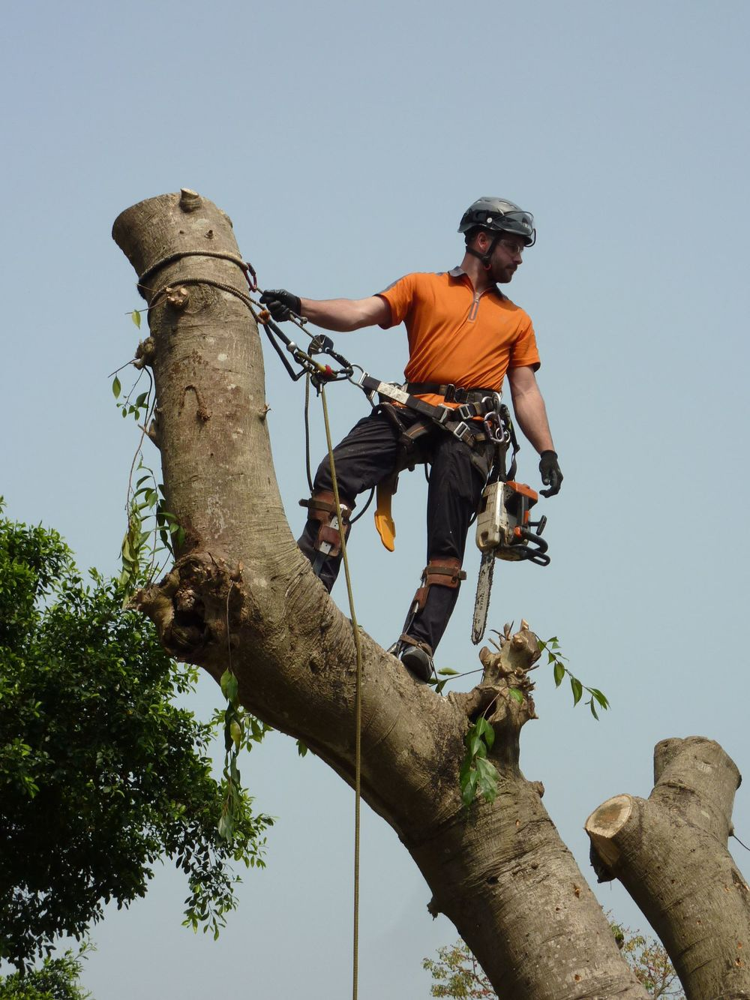
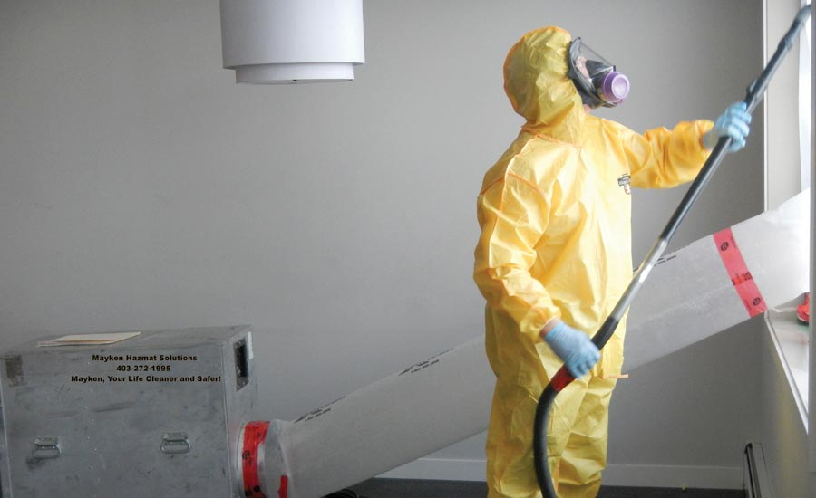

My professional career!
My professional career has been an interesting one so far! Out of school, i underwent an Arboricultural apprenticeship (3 years). I spent 7 or so years climbing trees with chainsaws and doing all sorts of crazy things. It was an interesting career but a physically demanding one. Once i dedided id had enough of that, i moved into the Trauma Cleaning Industry. Weird choice, i know. At that job, i cleaned up a number of deaths and a number of hoarders houses. Ther role also saw us decontaminating meth labs and all other sorts of nasty stuff! Funnily enough, it wasnt a bad job, if you could get used to the smells. After that, i decided i wanted a change of pace and decided to set some new career goals, those goals involved a desired salary, to learn a new skill that will remain relevant throughout my life and to also find a career that i really was truly interested in. Fast forward to now, im studying to enter the tech industry and working part time at coles in the mean time. Its not a glamorous job but its enough for me!
Pictured above is an arborist in typical day to day activity. In the picture, hes in the process of removing a tree for whatever reason!
Picture below is a standard outfit we wore when working trauma scenes!
Career Goals!
- Become proficient and knowledgable in all things Full Stack!
- Secure a remote job once my skills are up to scratch for it!
- Successfully network with everyone i meet in this industry!